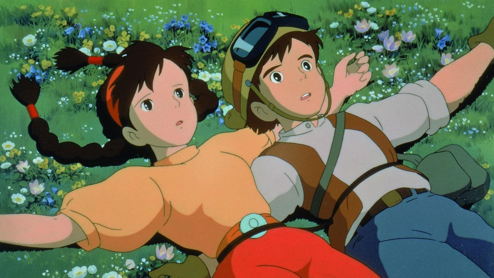
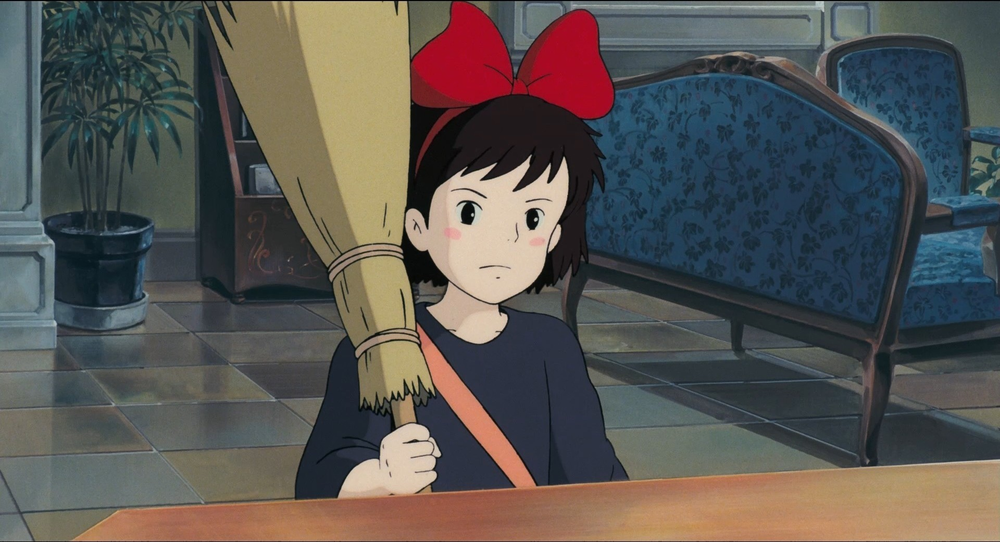
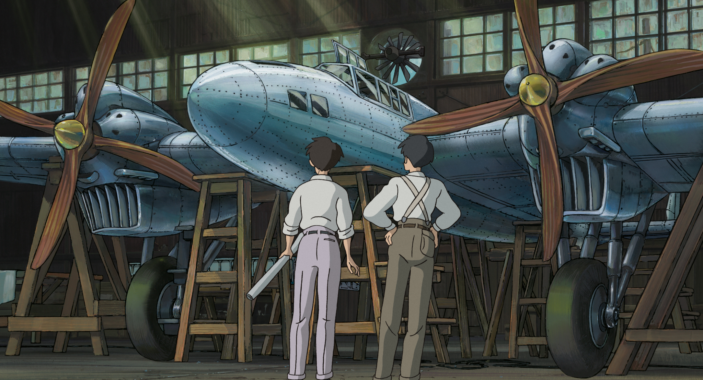

Best Known Works

Castle in the Sky
The girl possesses a magic crystal that points the way to the flying island.
My Neighbor Totoro
Sisters get to know the charming spirit of the forest. The story of belief in miracles
Princess Mononoke
An enchanted prince and a forest princess fight an ancient demon and his slaves
Spirited Away
The girl must save her parents in the spirit world. The world's favorite animation ratings

Kiki's Delivery Service
The little sorceress learns to live independently and works as a courier on a broomstick

The Wind Rises
The young man becomes an aircraft designer on the eve of World War II
All The Feature Films Shooting
| # | Title | Year |
|---|---|---|
| 1 | The Castle of Cagliostro | 1979 |
| 2 | Nausicaä of the Valley of the Wind | 1984 |
| 3 | Castle in the Sky | 1986 |
| 4 | My Neighbor Totoro | 1988 |
| 5 | Kiki's Delivery Service | 1989 |
| 6 | Porco Rosso | 1992 |
| 7 | Princess Mononoke | 1997 |
| 8 | Spirited Away | 2001 |
| 9 | Howl's Moving Castle | 2004 |
| 10 | Ponyo | 2008 |
| 11 | The Wind Rises | 2013 |
| 12 | Castle in the Sky | 1986 |
| 13 | How Do You Live? | Soon |